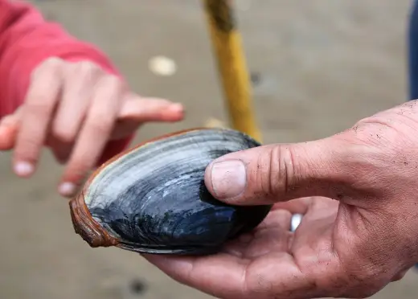

Clams
Clams is a wild protein you can forage from September to May in Northeast, Southeast, Pacific Northwest, California and Alaska. Soft-shell and littleneck clams buried in sand and mud flats; look for their breathing holes at low tide.

When is clams in season in the United States?
Clams is usually in season September to May. Timing shifts with weather, latitude and altitude.
Where does clams grow in the United States?
Clams grows in Alabama, Alaska, Arkansas, California, Connecticut, Delaware, District of Columbia, Florida, Georgia, Hawaii, Idaho, Kentucky, Louisiana, Maine, Maryland, Massachusetts, Mississippi, New Hampshire, New Jersey, New York, North Carolina, Oklahoma, Oregon, Pennsylvania, Rhode Island, South Carolina, Tennessee, Texas, Vermont, Virginia, Washington, West Virginia. Regions: Northeast, Southeast, Pacific Northwest, California, Alaska.
How do you recognise clams?
Soft-shell and littleneck clams buried in sand and mud flats; look for their breathing holes at low tide.
How do you harvest clams?
Check local rules, licences, size limits and water-quality warnings before taking any shellfish or fish.
How do you eat clams?
Steamers with butter, chowder, linguine.
How do you store clams?
Cook and freeze meat.
What is clams good for?
Protein, Iron & calcium.
What can you cook with clams?
- Steamers with drawn butter: Soft-shell clams steamed open and dipped in broth then melted butter.
- New England clam chowder: Clams, potato, salt pork and cream.